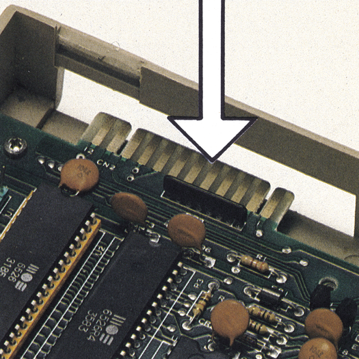
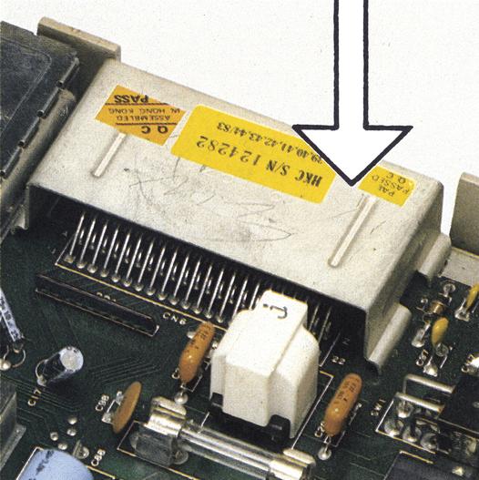
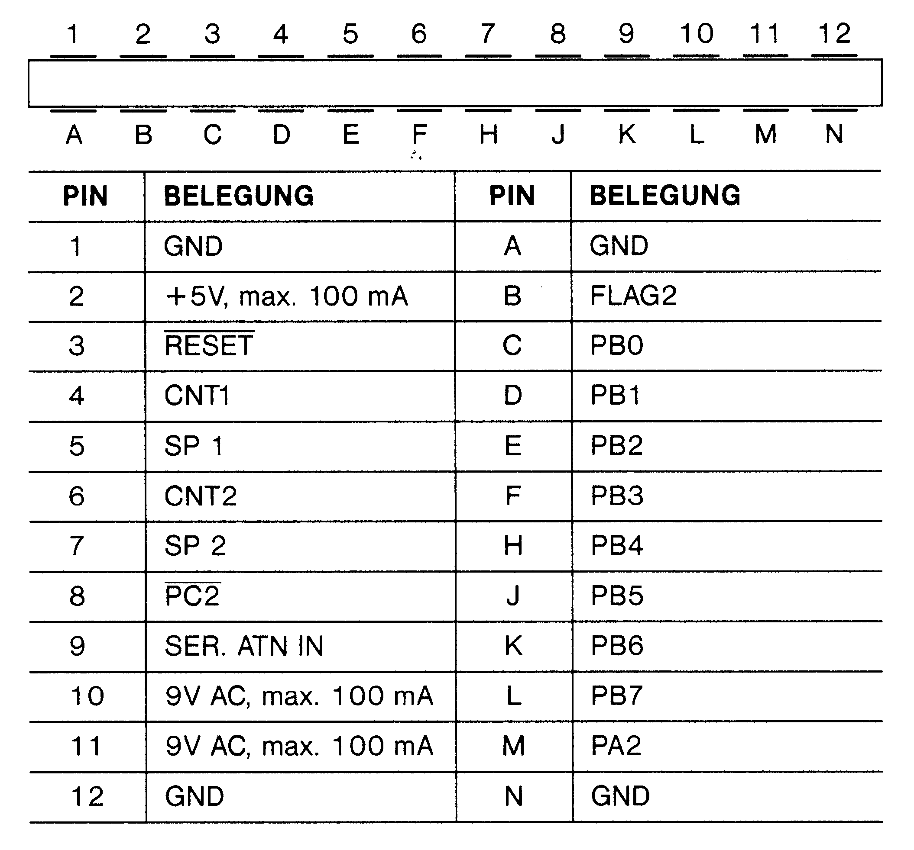
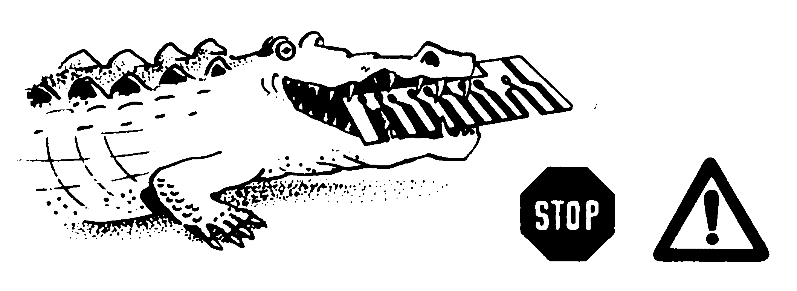
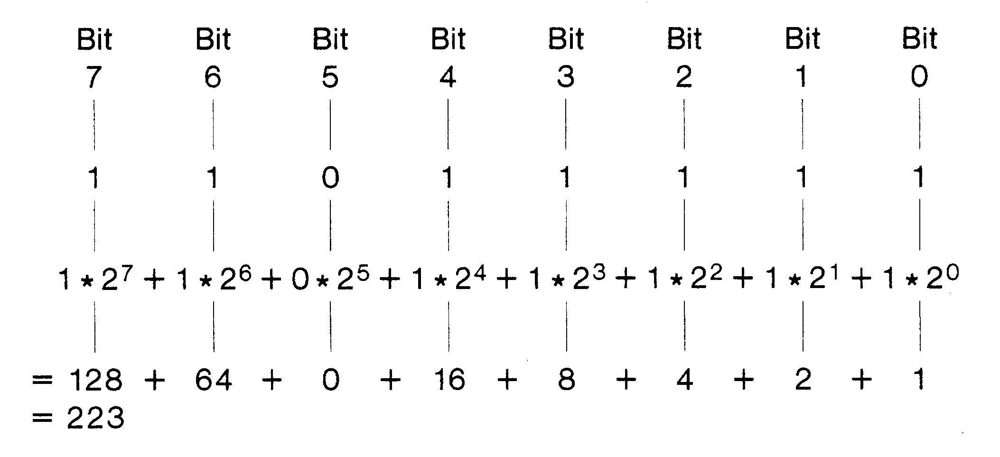
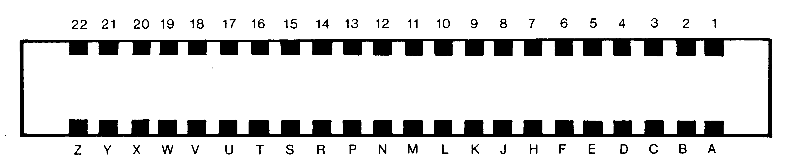

Die Ports des C 64
Der Expansion-Port und der User-Port sind zwei Anschlüsse, die Ihrem Computer Tür und Tor für die verschiedensten Erweiterungen öffnen. Was können Sie mit den einzelnen Ports machen?
Wollen Sie Programm-Module an Ihrem Computer betreiben, einen Akustikkoppler anschließen oder eine Alarmanlage überwachen? Dann müssen Sie den User- oder den Expansion-Port benutzen. Natürlich sind dies nur drei Beispiele unter einer Vielzahl von Möglichkeiten. Es sind aber auch Beipiele, die typisch für die Verwendung des jeweiligen Ports sind. So schließt man Akustikkoppler und Alarmanlage am User-Port (Bild 1) an, während in den Expansion-Port (Bild 2) Programm-Module gesteckt werden. Aber wenden wir uns erst einmal dem User-Port zu.


Der vielseitige Port
Der User-Port ist eine Schnittstelle, die Sie sehr vielseitig verwenden können. Eine für die meisten Akustikkoppler notwendige RS232-Schnittstelle läßt sich über den User-Port ebenso realisieren wie Meß- und Steueraufgaben.
Sehen wir uns diese Schnittstelle etwas genauer an. Die Anschlußbelegung des User-Ports zeigt das Bild 3. Beachten Sie bitte, daß die Anschlüsse an der Ober- und Unterseite des User-Ports verschiedene Funktionen haben. Klemmen Sie deshalb niemals eine Krokodilklemme oder etwas Vergleichbares an!


Wie schon gesagt, ist der User-Port sehr variabel verwendbar. Der Grund dafür ist ein im User-Port enthaltener 8-Bit-Parallelport (Bild 3: PB0 bis PB7), den Sie frei programmieren können. Das bedeutet, über den Parallel-Port können Sie Daten einlesen und ausgeben. Interessant dabei ist, daß Sie die Datenrichtung für jede der acht Leitungen einzeln bestimmen können. Welche Leitung als Eingang und welche als Ausgang geschaltet wird, geben Sie über das Datenrichtungsregister vor. Die Abkürzung »DDR« für dieses Register kommt aus dem Englischen und heißt »Data Direction Register«. Aber wie können mit einem Register acht Leitungen gesteuert werden? Nun, dafür müssen wir uns etwas mit dem Zusammenhang zwischen Dual- und Dezimalzahlen beschäftigen.
Der User-Port wird programmiert
Das duale Zahlensystem, mit dem der Computer arbeitet, kennt nur zwei Ziffern, die 0 und die 1. Dabei wird eine Informationseinheit, die 0 oder 1 enthält, ein »Bit« genannt. Es ist die kleinste, in der Cumputertechnik verwendete Informationseinheit. Mit einem Bit lassen sich die Dezimalzahlen 0 (=0 * 20) und 1 (=1 * 20) darstellen. Nehmen wir ein zweites Bit dazu, so können wir schon Dezimalzahlen von 0 bis 3 darstellen. Eine Drei ergibt sich, wenn beide Bits eine 1 enthalten (1 * 21 + 1 * 20 = 2 + 1 = 3). Mit acht Bits können schon Dezimalzahlen von 0 bis 255 dargestellt werden. Im Bild 4 finden Sie als Beispiel, wie die Zahl 223 im dualen System zerlegt ist. Acht Bits ergeben übrigens in der Computertechnik die nächstgrößere Informationseinheit, ein »Byte«. Ihr C 64 hat einen Speicherbereich von 65536 Byte. Das Byte 56579 ist das oben erwähnte Datenrichtungsregister. Wenn Sie dort eine Eins im Bit 0 eingeben, wird die dazugehörige Leitung PB0 auf Ausgang geschaltet. Überprüfen Sie doch einmal das DDR nach den Einschalten, indem Sie eingeben:

PRINT PEEK (56579)Auf dem Bildschirm müßte anschließend eine 0 erscheinen, da nach dem Einschalten des Computers die Portleitungen PB0 bis PB7 als Eingänge geschaltet sind. Wenn Sie den Wert aus unserem Beispiel (Bild 4) mit
POKE 56579,223eingeben, so enthält das DDR eine Bitfolge von 11011111. Alle PB-Leitungen sind damit als Ausgänge geschaltet, bis auf die Leitung PB5.
Über das DPB-Register (Data Port B) in der Speicherzelle 56577 können Sie nun die einzelnen Ausgänge auf 0 oder auf 1 setzen – in gleicher Weise, wie Sie es mit den DDR getan haben. Mit
POKE 56577,222haben Sie dort eine Bitfolge von 11011110 eingegeben. Bis auf PB0 sind so alle Ausgänge auf 1 gesetzt. Das bedeutet, an den Anschluß-Pins D bis H (PB1-PB4), sowie an Pin K (PB6) und L (PB7) liegen +5 Volt, während Pin C (PB0) auf 0 Volt liegt. Im vorliegenden Fall wurde im Bit 5 eine 0 eingegeben. Da die entsprechende Leitung im DDR jedoch vorher als Eingang geschaltet wurde, ignoriert der Computer das Bit 5 des DPB-Registers. Sie hätten ebensogut mit
POKE 56577,254eine Bitfolge von 11111110 eingeben können.
Das müssen Sie beim Programmieren des User-Ports beachten
Wenn Sie nun anfangen, mit dem User-Port zu experimentieren, müssen Sie allerdings etwas aufpassen. Denn wie wir schon erwähnt haben, werden die auf 1 gesetzten Ausgänge von einem integrierten Baustein, dem CIA (Control Interface Adapter), auf +5 Volt geschaltet. Verbinden Sie diese Anschlüsse nun aus Versehen mit Masse, so nimmt Ihnen der CIA diese Behandlung sehr übel. Anschließend müssen Sie höchstwahrscheinlich Ihren Computer in eine Service-Werkstatt geben. Also, seien Sie bitte vorsichtig.
Wenn Sie den Port als Eingang benutzen, ist es natürlich auch interessant, einzelne Leitungen zu überprüfen. Mit Hilfe des Port-Registers können Sie dieses tun. Nach
PRINT PEEK (56577)erscheint der Wert des DPB-Registers auf dem Bildschirm. Schalten Sie Ihren Computer noch einmal an, und überprüfen Sie das DPB-Register. Sie werden feststellen, daß alle Bits auf 1 gesetzt sind. Alle Leitungen des Port B liegen demnach auf +5 Volt.
Mit dem User-Port prüfen
Wie Sie sich sicher erinnern werden, sind nach dem Einschalten alle Leitungen des Port B als Eingänge geschaltet. Im Gegensatz zu Ausgängen können Sie nun jedes einzelne Bit auf 0 setzen, indem Sie die entsprechende Leitung mit Masse verbinden. Aber wie läßt sich ein einzelnes Bit vom DPB-Register überprüfen? Des Rätsels Lösung ist die »AND-Verknüpfung«. Um beispielsweise das Bit 7 zu überprüfen geben Sie ein:
PRINT PEEK (56577) AND 128Ist das Ergebnis 128, so enthält das Bit 7 des DPB-Registers eine 1. Bei einer 0 als Ergebnis enthält das Bit 7 ebenfalls eine 0. Das Bit 6 können Sie entsprechend mit
PRINT PEEK (56577) AND 64überprüfen. Beim Ergebnis 64 enthält das Bit 6 eine 1, bei 0 als Ergebnis ist wieder eine 0 enthalten. Auf die gleiche Weise lassen sich auch alle anderen Bits überprüfen. Was der Computer bei einer AND-Verknüpfung genau macht, können Sie im Sprite-Kurs in diesem Sonderheft nachlesen.
Wenn Sie die beschriebenen Basic-Anweisungen nun in Programme einbinden, können Sie die verschiedensten Steuervorgänge hervorrufen und überprüfen. Alarmanlagen lassen sich ebenso konstruieren wie blinkende Lämpchenreihen oder vieles mehr. Achten Sie aber darauf, daß Sie Ausgängen nur einen sehr begrenzten Strom entnehmen können. Er reicht zwar, um an jeder Leitung eine Leuchtdiode mit Vorwiderstand anzuschließen, aber für weitere Schaltvorgänge sollten Relais oder Verstärker zwischengeschaltet werden.
Natürlich können Sie den User-Port auch für die Datenfernübertragung nutzen und beispielsweise einen Akustikkoppler anschließen. Mehr über dieses Thema können Sie in unserem Datenfernübertragungs-Artikel in diesem Sonderheft erfahren.
So erkennt der C 64 Module
Module wie »Simons-Basic« oder das Spiel »Soccer« werden in den Expansion-Port gesteckt. Nach dem Einschalten steht Ihnen dann sofort das entsprechende Programm zur Verfügung. Aber wie erkennt Ihr Computer, daß Sie ein Modul eingesteckt haben? Dafür müssen wir uns die Funktion von einigen Kontakten des Expansion-Ports verdeutlichen.
Das Bild 5 zeigt die Kontakte des Expansion-Ports, wie Sie sie von hinten sehen. Das Modul legt beim Einschalten die Leitung EXROM (Pin 9) gegen Masse (Pin 1,22,A und Z). Dadurch wird ein Speicherbereich von 8 KByte (=8192 Byte) aus dem Speicher des C 64 ausgeblendet. Es sind die Speicheradressen 32768 bis 40956. Der Speicherinhalt des eingesteckten Moduls befindet sich jetzt in diesem Bereich. Ihr Computer weiß damit aber noch nicht, daß dort ein Programm beginnt. Diese Information erhält er, wenn nach dem Einschalten die sogenannte »Reset-Routine« durchlaufen wird. Der Computer überprüft nämlich dabei den Inhalt der Speicherzellen 32772 bis 32776. Ist dort der Text »CBM80« enthalten, so weiß der Computer, daß ein Modul eingesteckt ist. Wenn Sie den eingeblendeten Speicherbereich mit den Speicherzellen für »CBM80« vergleichen, dann erkennen Sie, daß der Text im Modul enthalten ist. Ist kein Modul vorhanden, sind die entsprechenden Speicherzellen nach dem Einschalten leer und der Computer setzt die Reset-Routine fort. Findet der Computer allerdings »CBM80«, so holt er sich aus den ersten beiden eingeblendeten Speicherzellen (32768 und 32769) die dort abgelegte Startadresse des Modulprogramms und springt an die entsprechende Adresse. Das Modulprogramm wird auf diese Weise sofort nach dem Einschalten des Computers gestartet. Natürlich erfolgt auch nach jedem Reset die Abfrage, ob ein Modul vorhanden ist oder nicht. Die einfachste Weise, ein Reset auszulösen, ist übrigens, am User-Port die Kontakte 3 (Reset) und 1 (Masse) miteinander zu verbinden. Mit einem Taster können Sie ein hardwaremäßiges Reset fest vorsehen. Aber beachten Sie die Garantiebedingungen des Herstellers.

In unserem Port-Artikel wollten wir Sie mit einigen grundsätzlichen Verwendungen des Expansion- und User-Ports vertraut machen. Wenn Sie sich noch mehr für die beiden Ports interessieren, dann möchten wir Sie auf einige Artikel in unseren 64'er-Stammheften aufmerksam machen:
Im Artikel »User-Port-Display« (Ausgabe 5/85, Seite 36) erfahren Sie, wie Sie am User-Port LEDs, Relais und Optokoppler anschließen. Kleine Steuerprogramme sind auch dabei.
In »Nicht nur ein Geheimdienst: CIA« (Ausgabe 2/86, Seite 93) finden Sie detaillierte Informationen über den User-Port-Baustein 6526 und dessen Programmierung. Auch wie Sie zwei C 64 über den User-Port koppeln, wird beschrieben.
Die 64'er Extra-Seiten enthalten in der Ausgabe 4/86 eine Intensiv-Information über den Expansion-Port – besonders geeignet für alle, die den Expansion-Port einmal hardwaremäßig nutzen wollen.
(kn)